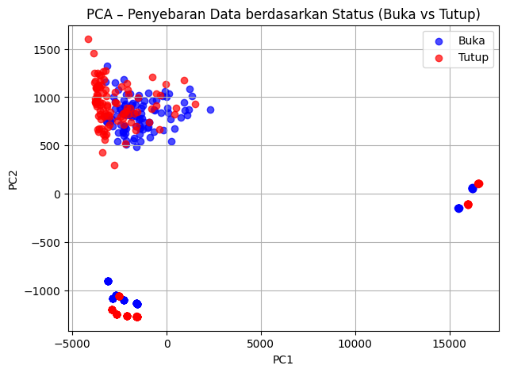
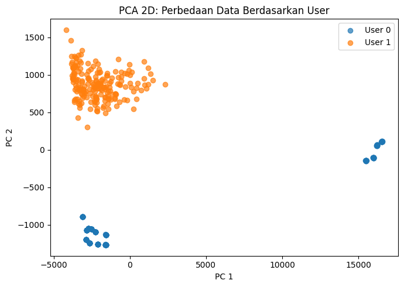

import pandas as pd
import os
from sklearn.model_selection import train_test_split
from sklearn.ensemble import RandomForestClassifier
from sklearn.preprocessing import StandardScaler
from sklearn.pipeline import Pipeline
from sklearn.metrics import accuracy_score, classification_report, confusion_matrix
import joblib
# === Load dataset ===
df = pd.read_csv("data/voice_dataset.csv")
# === Fitur 36 kolom ===
feature_cols = [col for col in df.columns if col.startswith("mfcc")]
X = df[feature_cols].to_numpy()
y = df["status"].to_numpy() # 0 = buka, 1 = tutup
print("=== Daftar Fitur yang Digunakan ===")
for i, col in enumerate(feature_cols, start=1):
print(f"{i}. {col}")
print(f"\nTotal fitur: {len(feature_cols)} kolom\n")
print(f"Jumlah sampel: {X.shape[0]} suara\n")
---------------------------------------------------------------------------
FileNotFoundError Traceback (most recent call last)
Cell In[2], line 2
1 # === Load dataset ===
----> 2 df = pd.read_csv("data/voice_dataset.csv")
4 # === Fitur 36 kolom ===
5 feature_cols = [col for col in df.columns if col.startswith("mfcc")]
File ~/.local/lib/python3.12/site-packages/pandas/io/parsers/readers.py:1026, in read_csv(filepath_or_buffer, sep, delimiter, header, names, index_col, usecols, dtype, engine, converters, true_values, false_values, skipinitialspace, skiprows, skipfooter, nrows, na_values, keep_default_na, na_filter, verbose, skip_blank_lines, parse_dates, infer_datetime_format, keep_date_col, date_parser, date_format, dayfirst, cache_dates, iterator, chunksize, compression, thousands, decimal, lineterminator, quotechar, quoting, doublequote, escapechar, comment, encoding, encoding_errors, dialect, on_bad_lines, delim_whitespace, low_memory, memory_map, float_precision, storage_options, dtype_backend)
1013 kwds_defaults = _refine_defaults_read(
1014 dialect,
1015 delimiter,
(...) 1022 dtype_backend=dtype_backend,
1023 )
1024 kwds.update(kwds_defaults)
-> 1026 return _read(filepath_or_buffer, kwds)
File ~/.local/lib/python3.12/site-packages/pandas/io/parsers/readers.py:620, in _read(filepath_or_buffer, kwds)
617 _validate_names(kwds.get("names", None))
619 # Create the parser.
--> 620 parser = TextFileReader(filepath_or_buffer, **kwds)
622 if chunksize or iterator:
623 return parser
File ~/.local/lib/python3.12/site-packages/pandas/io/parsers/readers.py:1620, in TextFileReader.__init__(self, f, engine, **kwds)
1617 self.options["has_index_names"] = kwds["has_index_names"]
1619 self.handles: IOHandles | None = None
-> 1620 self._engine = self._make_engine(f, self.engine)
File ~/.local/lib/python3.12/site-packages/pandas/io/parsers/readers.py:1880, in TextFileReader._make_engine(self, f, engine)
1878 if "b" not in mode:
1879 mode += "b"
-> 1880 self.handles = get_handle(
1881 f,
1882 mode,
1883 encoding=self.options.get("encoding", None),
1884 compression=self.options.get("compression", None),
1885 memory_map=self.options.get("memory_map", False),
1886 is_text=is_text,
1887 errors=self.options.get("encoding_errors", "strict"),
1888 storage_options=self.options.get("storage_options", None),
1889 )
1890 assert self.handles is not None
1891 f = self.handles.handle
File ~/.local/lib/python3.12/site-packages/pandas/io/common.py:873, in get_handle(path_or_buf, mode, encoding, compression, memory_map, is_text, errors, storage_options)
868 elif isinstance(handle, str):
869 # Check whether the filename is to be opened in binary mode.
870 # Binary mode does not support 'encoding' and 'newline'.
871 if ioargs.encoding and "b" not in ioargs.mode:
872 # Encoding
--> 873 handle = open(
874 handle,
875 ioargs.mode,
876 encoding=ioargs.encoding,
877 errors=errors,
878 newline="",
879 )
880 else:
881 # Binary mode
882 handle = open(handle, ioargs.mode)
FileNotFoundError: [Errno 2] No such file or directory: 'data/voice_dataset.csv'
# === CEK MISSING VALUE ===
print("=== CEK MISSING VALUE ===")
missing = df.isnull().sum()
print(missing[missing > 0]) # tampilkan hanya kolom yang memiliki missing
total_missing = missing.sum()
print(f"\nTotal missing value: {total_missing}")
if total_missing == 0:
print("Tidak ada missing value.")
=== CEK MISSING VALUE ===
Series([], dtype: int64)
Total missing value: 0
Tidak ada missing value.
from sklearn.decomposition import PCA
import matplotlib.pyplot as plt
import pandas as pd
# Load dataset
df = pd.read_csv("data/voice_dataset.csv")
feature_cols = [c for c in df.columns if c.startswith("mfcc")]
X = df[feature_cols].values
y_status = df["status"].values # 0=buka, 1=tutup
pca = PCA(n_components=2)
X_pca = pca.fit_transform(X)
plt.figure(figsize=(7, 5))
colors = ["blue", "red"]
labels = ["Buka", "Tutup"]
for val in [0, 1]:
idx = (y_status == val)
plt.scatter(X_pca[idx, 0], X_pca[idx, 1],
alpha=0.7, label=labels[val], c=colors[val])
plt.title("PCA – Penyebaran Data berdasarkan Status (Buka vs Tutup)")
plt.xlabel("PC1")
plt.ylabel("PC2")
plt.legend()
plt.grid(True)
plt.show()

import numpy as np
# Hitung batas outlier per kolom
Q1 = df[feature_cols].quantile(0.25)
Q3 = df[feature_cols].quantile(0.75)
IQR = Q3 - Q1
lower_bound = Q1 - 1.5 * IQR
upper_bound = Q3 + 1.5 * IQR
# Mask outlier (boolean untuk setiap row)
outlier_mask = (df[feature_cols] < lower_bound) | (df[feature_cols] > upper_bound)
outlier_mask = outlier_mask.any(axis=1) # True jika baris memiliki outlier
# Ambil semua file yang mengandung outlier
outlier_files = df.loc[outlier_mask, "filename"].unique()
print("=== File Penyebab Outlier ===")
for f in outlier_files:
print(f"- {f}")
print(f"\nTotal file bermasalah: {len(outlier_files)}")
=== File Penyebab Outlier ===
- buka_006.wav
- buka_009.wav
- buka_014.wav
- buka_017.wav
- buka_022.wav
- buka_025.wav
- buka_030.wav
- buka_033.wav
- buka_038.wav
- buka_041.wav
- buka_046.wav
- buka_049.wav
- buka_054.wav
- buka_057.wav
- buka_062.wav
- buka_065.wav
- buka_070.wav
- buka_073.wav
- buka_078.wav
- buka_081.wav
- buka_086.wav
- buka_089.wav
- buka_094.wav
- buka_097.wav
- tutup_006.wav
- tutup_009.wav
- tutup_014.wav
- tutup_017.wav
- tutup_022.wav
- tutup_025.wav
- tutup_030.wav
- tutup_033.wav
- tutup_038.wav
- tutup_041.wav
- tutup_046.wav
- tutup_049.wav
- tutup_054.wav
- tutup_057.wav
- tutup_062.wav
- tutup_065.wav
- tutup_070.wav
- tutup_073.wav
- tutup_078.wav
- tutup_081.wav
- tutup_086.wav
- tutup_089.wav
- tutup_094.wav
- tutup_097.wav
- Rekaman baru 1.wav
- Rekaman baru 10.wav
- Rekaman baru 100.wav
- Rekaman baru 11.wav
- Rekaman baru 12.wav
- Rekaman baru 13.wav
- Rekaman baru 14.wav
- Rekaman baru 15.wav
- Rekaman baru 16.wav
- Rekaman baru 17.wav
- Rekaman baru 18.wav
- Rekaman baru 2.wav
- Rekaman baru 22.wav
- Rekaman baru 23.wav
- Rekaman baru 24.wav
- Rekaman baru 25.wav
- Rekaman baru 26.wav
- Rekaman baru 29.wav
- Rekaman baru 30.wav
- Rekaman baru 31.wav
- Rekaman baru 32.wav
- Rekaman baru 34.wav
- Rekaman baru 35.wav
- Rekaman baru 37.wav
- Rekaman baru 42.wav
- Rekaman baru 44.wav
- Rekaman baru 45.wav
- Rekaman baru 46.wav
- Rekaman baru 48.wav
- Rekaman baru 5.wav
- Rekaman baru 53.wav
- Rekaman baru 56.wav
- Rekaman baru 6.wav
- Rekaman baru 60.wav
- Rekaman baru 67.wav
- Rekaman baru 69.wav
- Rekaman baru 7.wav
- Rekaman baru 70.wav
- Rekaman baru 71.wav
- Rekaman baru 72.wav
- Rekaman baru 75.wav
- Rekaman baru 76.wav
- Rekaman baru 77.wav
- Rekaman baru 78.wav
- Rekaman baru 79.wav
- Rekaman baru 8.wav
- Rekaman baru 80.wav
- Rekaman baru 81.wav
- Rekaman baru 83.wav
- Rekaman baru 84.wav
- Rekaman baru 87.wav
- Rekaman baru 88.wav
- Rekaman baru 92.wav
- Rekaman baru 93.wav
- Rekaman baru 94.wav
- Rekaman baru 95.wav
- Rekaman baru 96.wav
- Rekaman baru 97.wav
- Rekaman baru 98.wav
- Rekaman baru 20.wav
- Rekaman baru 21.wav
- Rekaman baru 27.wav
- Rekaman baru 28.wav
- Rekaman baru 33.wav
- Rekaman baru 36.wav
- Rekaman baru 38.wav
- Rekaman baru 39.wav
- Rekaman baru 4.wav
- Rekaman baru 40.wav
- Rekaman baru 41.wav
- Rekaman baru 43.wav
- Rekaman baru 47.wav
- Rekaman baru 49.wav
- Rekaman baru 50.wav
- Rekaman baru 51.wav
- Rekaman baru 52.wav
- Rekaman baru 55.wav
- Rekaman baru 58.wav
- Rekaman baru 62.wav
- Rekaman baru 74.wav
- Rekaman baru 82.wav
- Rekaman baru 85.wav
- Rekaman baru 86.wav
- Rekaman baru 90.wav
- Rekaman baru 91.wav
- Rekaman baru 99.wav
Total file bermasalah: 134
print("=== Jumlah Outlier per Fitur ===")
outlier_counts = (df[feature_cols] < lower_bound) | (df[feature_cols] > upper_bound)
outlier_counts = outlier_counts.sum().sort_values(ascending=False)
print(outlier_counts)
=== Jumlah Outlier per Fitur ===
mfcc2 72
mfcc1 65
mfcc34 64
mfcc0 53
mfcc36 51
mfcc35 48
mfcc11 44
mfcc10 41
mfcc32 29
mfcc33 7
mfcc3 5
mfcc8 3
mfcc7 1
mfcc29 1
mfcc28 0
mfcc25 0
mfcc26 0
mfcc27 0
mfcc5 0
mfcc30 0
mfcc31 0
mfcc23 0
mfcc24 0
mfcc21 0
mfcc22 0
mfcc6 0
mfcc20 0
mfcc19 0
mfcc4 0
mfcc17 0
mfcc16 0
mfcc15 0
mfcc14 0
mfcc13 0
mfcc12 0
mfcc9 0
mfcc18 0
dtype: int64
from sklearn.decomposition import PCA
import matplotlib.pyplot as plt
X = df[feature_cols].values
y_user = df["user"].values
pca = PCA(n_components=2)
X_pca = pca.fit_transform(X)
plt.figure(figsize=(7, 5))
for user in sorted(df['user'].unique()):
idx = (y_user == user)
plt.scatter(X_pca[idx, 0], X_pca[idx, 1], alpha=0.7, label=f'User {user}')
plt.title("PCA 2D: Perbedaan Data Berdasarkan User")
plt.xlabel("PC 1")
plt.ylabel("PC 2")
plt.legend()
plt.tight_layout()
plt.show()

# === Split data ===
X_train, X_test, y_train, y_test = train_test_split(
X, y, test_size=0.2, random_state=42, stratify=y
)
# === Pipeline RandomForest + StandardScaler ===
model_status = Pipeline([
("scaler", StandardScaler()),
("rf", RandomForestClassifier(n_estimators=200, random_state=42))
])
# === Training ===
model_status.fit(X_train, y_train)
# === Prediksi ===
y_pred = model_status.predict(X_test)
# === Evaluasi ===
accuracy = accuracy_score(y_test, y_pred)
conf_mat = confusion_matrix(y_test, y_pred)
class_report = classification_report(y_test, y_pred, target_names=["buka", "tutup"])
print("=== Hasil Evaluasi Model Status ===")
print(f"Akurasi: {accuracy:.4f}")
print("\nConfusion Matrix:")
print(conf_mat)
print("\nClassification Report:")
print(class_report)
=== Hasil Evaluasi Model Status ===
Akurasi: 0.9750
Confusion Matrix:
[[38 2]
[ 0 40]]
Classification Report:
precision recall f1-score support
buka 1.00 0.95 0.97 40
tutup 0.95 1.00 0.98 40
accuracy 0.97 80
macro avg 0.98 0.97 0.97 80
weighted avg 0.98 0.97 0.97 80
import pandas as pd
import os
from sklearn.model_selection import train_test_split
from sklearn.ensemble import RandomForestClassifier
from sklearn.preprocessing import StandardScaler
from sklearn.pipeline import Pipeline
from sklearn.metrics import accuracy_score, confusion_matrix, classification_report
import joblib
# === Load dataset ===
df = pd.read_csv("data/voice_dataset.csv")
feature_cols = [col for col in df.columns if col.startswith("mfcc")]
X = df[feature_cols].to_numpy()
y = df["user"].to_numpy() # 0 = user1, 1 = user2
# === Tampilkan fitur yang digunakan ===
print("=== Daftar Fitur yang Digunakan ===")
for i, col in enumerate(feature_cols, start=1):
print(f"{i}. {col}")
print(f"\nTotal fitur: {len(feature_cols)} kolom\n")
=== Daftar Fitur yang Digunakan ===
1. mfcc0
2. mfcc1
3. mfcc2
4. mfcc3
5. mfcc4
6. mfcc5
7. mfcc6
8. mfcc7
9. mfcc8
10. mfcc9
11. mfcc10
12. mfcc11
13. mfcc12
14. mfcc13
15. mfcc14
16. mfcc15
17. mfcc16
18. mfcc17
19. mfcc18
20. mfcc19
21. mfcc20
22. mfcc21
23. mfcc22
24. mfcc23
25. mfcc24
26. mfcc25
27. mfcc26
28. mfcc27
29. mfcc28
30. mfcc29
31. mfcc30
32. mfcc31
33. mfcc32
34. mfcc33
35. mfcc34
36. mfcc35
37. mfcc36
Total fitur: 37 kolom
feature_cols = [col for col in df.columns if col.startswith("mfcc")]
X = df[feature_cols].to_numpy()
y = df["user"].to_numpy()
from sklearn.model_selection import train_test_split
from sklearn.preprocessing import StandardScaler
from sklearn.ensemble import RandomForestClassifier
from sklearn.pipeline import Pipeline
import joblib
X_train, X_test, y_train, y_test = train_test_split(
X, y, test_size=0.2, random_state=42, stratify=y
)
model = Pipeline([
("scaler", StandardScaler()),
("rf", RandomForestClassifier(
n_estimators=200,
class_weight="balanced",
random_state=42
))
])
model.fit(X_train, y_train)
joblib.dump(model, "models/user_model.pkl")
['models/user_model.pkl']
# === Simpan model dan feature order ===
os.makedirs("models", exist_ok=True)
joblib.dump(feature_cols, "models/feature_cols.pkl")
print("\n[INFO] Model user berhasil disimpan.")
[INFO] Model user berhasil disimpan.